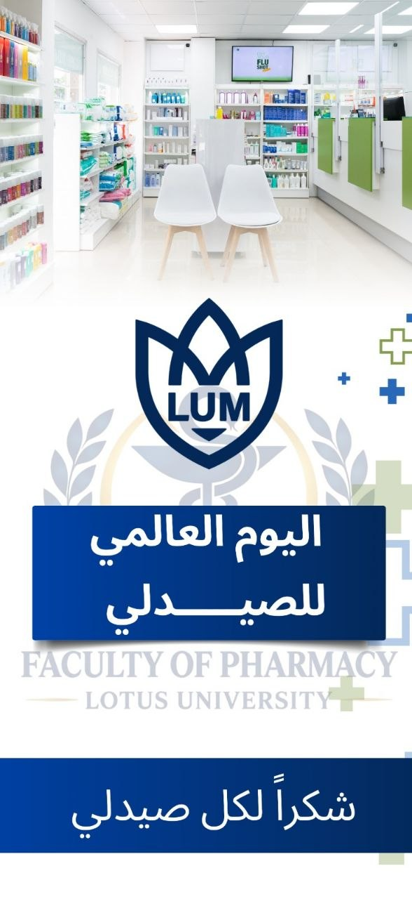

Faculty of Pharmacy • World Pharmacists Day 2026
THE EVOLUTION OF PHARMACY
"صيدلي اليوم ... لصحة أفضل غداً"
شكراً لكل صيدلي يسهم في رعاية وصحة المجتمع
رحلة عبر آلاف السنين من المعرفة العلاجية وتحضير الأدوية وتطور مهنة الصيدلة حتى عصر الرعاية الدوائية والتقنيات الحديثة.
اضغط على أي حقبة تاريخية لاستعراض التفاصيل الكاملة والدراسة التاريخية.
تُعد بردية إيبرس (Ebers Papyrus) المكتوبة حوالي عام 1550 قبل الميلاد واحدة من أقدم وأهم المخطوطات الطبية والدوائية المتبقية في التاريخ.
كانت Per-Ankh (بيت الحياة) مؤسسة تعليمية ودينية كبرى مرتبطة بالمعرفة وتدريب الأطباء وتوثيق العلاجات في مصر القديمة، وليست مجرد صيدلية بمفهومها الحديث.
20 Meters in Length • 110 Pages of Medical Wisdom
تطوير أدوات الكيمياء مثل الإنبيق (Alembic) واستخلاص الزيوت والمياه المقطرة.
افتتاح دكاكين الأدوية المستقلة وتطبيق نظام الحسبة للرقابة على جودة العقاقير.
تأليف موسوعات دوائية دقيقة أصبحت المرجع الأول للمستحضرات والعلاجات.
ضمان سلامة الدواء والحد من التداخلات الدوائية.
المشاركة الفعالة في القرارات العلاجية بالمستشفيات.
متابعة التركيزات العلاجية لضمان أفضل فاعلية.
تقديم الاستشارات الدوائية المباشرة للمرضى.
تصميم العلاج المفصل بناءً على الشفرة الوراثية للمريض.
استخدام الذكاء الاصطناعي في اكتشاف الأدوية وتحليل البيانات.
طباعة الأدوية المخصصة بالجرعات الدقيقة لكل مريض.